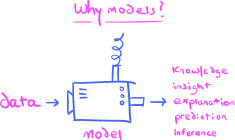
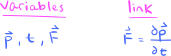
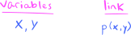
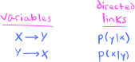
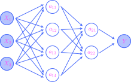
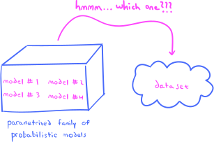

9. The halfway point: pivoting toward models and data analysis#
This chapter marks the beginning of a pivotal shift in the book, moving from our focused exploration of abstract probability theory to practicalities of building and training probabilistic models. Along with this, subsequent chapters construct estimators and statistics and develop their theories, all with the overarching goal of leveraging these newfound tools to discover answers to specific questions or inquiries of particular interest. Most texts on mathematical statistics make a similar transition to similar material that they call inferential statistics—but whatever it might be called, we are all trying to do the same thing: Analyze and learn from data.
The goal of this brief and purely expository chapter is to set the scene for the subsequent discussion—to help the reader orient themselves and gain a perspective on the big picture. We hope to answer the question: Why are we studying what we’re studying?
9.1. Why probabilistic models?#
Models provide context for raw data, and represent our knowledge of the system that produced or generated the data. They are both of theoretical and practical interest since the structures that they reveal might suggest further hypotheses and directions of purely scientific investigation, and also since they often have predictive power.

{kind=link}
For a practical example, a model trained to discover patterns and correlations on sales data and advertising expenditures for some business enterprise might be queried to predict the increase (or decrease) in sales when advertising resources are shifted from one medium to another, such as from television to social media advertising.
As we first mentioned in Chapter 6, the types of models that we study in this book have the (at first) curious property of being probabilistic in nature, rather than of the deterministic kind. A prototypical example of a deterministic model is given by Newton’s Second Law of Motion, which states that the derivative of the momentum \(\bp\) with respect to time \(t\) of a point mass is equal to the force \(\bF\) exerted on the mass. The law expresses a type of “deterministic link” between these three variables:

{kind=link}
According to the existence and uniqueness theorems for ordinary differential equations, given some initial conditions, Newton’s law may be solved (at least locally) to yield a solution for the momentum \(\bp\) as a function of time \(t\). In this manner, a subset of the variables completely and uniquely determine the values of the others.
But there might be situations in which models built on deterministic links between variables do not exist, either due to our ignorance, in the sense that there may exist hidden or latent determining variables that we do not know about, or for more fundamental reasons, as in certain philosophical interpretations of quantum mechanics that assert no deterministic theory exists. A third situation of interest is when a deterministic model does exist in theory, but it is so immensely complicated and complex to render it useless in practice. Another example from physics serves to illustrate this last situation: Assuming standard temperature and pressure, Avogadro’s law tells us that a cube one millimeter on each side contains approximately \(10^{16}\) molecules of an ideal gas. In principle, we might model the movement of each molecule deterministically via Newton’s laws, each molecule requiring six parameters, three for its position and three for its momentum. But then the model of the entire system—the entire cube of gas—is an assemblage of the individual models of each molecule, and in total depends on at least \(6\times 10^{16}\) variables. Clearly, we do not stand to learn much of anything about the system by using such an unwieldy model.
In the case of the cube of gas, the brilliant move was to give up on deterministic models based on Newton’s mechanical laws applied at the molecular level, and instead to develop parsimonious models linking small numbers of macroscopic variables that are statistical manifestations of the huge number of microscopic ones. This is the birth of thermodynamics and statistical mechanics.
This thermodynamic example illustrates just one way in which probability and statistics might enter the scientific modeling process, where the model variables in question are statistics that are functions of random quantities. But a more direct entry point for probability theory is to assume that the model variables themselves are random quantities. Take, for example, the area and price variables in the Ames housing dataset that we know well by now, originally appearing in a previous programming assignment and again in Chapter 7. Recall that it contains data on \(2{,}930\) houses in Ames, Iowa, in the United States—in particular, it includes the area of each house (measured in square feet) and the selling price (measured in thousands of US dollars). A scatter plot of the price versus area variable is given in:
Show code cell source
import pandas as pd
import matplotlib.pyplot as plt
import matplotlib_inline.backend_inline
import seaborn as sns
plt.style.use('../aux-files/custom_style_light.mplstyle')
matplotlib_inline.backend_inline.set_matplotlib_formats('svg')
blue = '#486AFB'
magenta = '#FD46FC'
url = 'https://raw.githubusercontent.com/jmyers7/stats-book-materials/main/data/data-3-1.csv'
df = pd.read_csv(url, usecols=['area', 'price'])
sns.scatterplot(data=df, x='area', y='price', alpha=0.5)
plt.gcf().set_size_inches(w=5, h=3)
plt.tight_layout()
Perhaps in some ideal clockwork universe, there might exist a deterministic model linking these two variables. But presumably such a model would depend on a myriad of “hidden” variables, representing and quantifying absolutely everything in the universe that could possibly affect price and area. The effects would be so complex and complicated to be essentially unintelligible and unknowable, for all practical purposes. In other words, these effects would appear random.
Probabilistic models may thus be considered particular examples of phenomenological models, a class of models that seek to describe the empirical and observed links between variables. Such models make no attempt to explain underlying causes or to take account of the exact mechanism through which the variables interact with each other—indeed, probabilistic models are agnostic toward any underlying mechanistic theory that may (or may not) exist. The only assumption that they make is that the randomness in the data has enough regularity to qualify as a form of “structured randomness,” often called stochasticity, that is amenable to the tools and techniques of mathematical probability theory. For example, in the Ames housing dataset above, there is a very clear regularity between the two variables consisting of a strong positive correlation (which you quantified in a previous programming assignment). This correlation is highlighted by a particular type of probabilistic model called a linear regression model (studied in Chapter 12), which produces a regression line fitting the data as such:
Show code cell source
sns.regplot(data=df, x='area', y='price', line_kws={'color': magenta}, scatter_kws={'alpha': 0.15}, ci=None)
plt.gcf().set_size_inches(w=5, h=3)
plt.tight_layout()
The link between a pair of random variables \(X\) and \(Y\) in a probabilistic model is described not by some equation or functional dependence, but rather by their joint probability distribution:

{kind=link}
The joint distribution has a bidirectional character to it, but by conditioning on one variable or the other, the joint distribution transforms into the two conditional distributions that provide directed links between the variables:

{kind=link}
The major goal of the next chapter is to study these directed stochastic links in the context of information theory, in which they are called communication channels, the idea being that the conditional distributions are the mechanisms through which the two variables communicate with each other or exert influence. Later, in Chapter 12, we study particular types of probabilistic models in which random (and deterministic) variables are brought together and connected in networks of communication channels. For example, the following is a graphical representation of a feedforward, fully-connected artificial neural network with two hidden layers:

{kind=link}
The input and output layers consist of random variables \(X_1,X_2,X_3,Y\), while the “hidden” variables (the \(z\)’s) are deterministic. This network determines a communication channel or stochastic link from the \(X\)’s to \(Y\) given by the conditional probability distribution with mass function \(p(y\mid x_1,x_2,x_3)\). Given the complexity of the graphical representation, it’s important to remember that the network is essentially just a conditional mass function!
9.2. Learning and optimization#
The kinds of probabilistic models of primary interest in this book occur in parametrized families. The type of data under consideration and the types of questions that the analyst hopes to answer often dictates or suggests which of these families a model should be chosen from. But then, this leaves the analyst with the formidable challenge of choosing optimal parameters for their model:

{kind=link}
That an optimal choice of parameters exists presupposes that there is some criterion through which we judge one set of parameters to be better or more appropriate than another set. Although there are many such criteria, we shall exclusively use the following one in this book:
The Distance Criterion for Parameter Choice. Given two probabilistic models within the same parametric family, choose the model whose distance from the empirical distribution of the data is smaller.
Of course, in order for this criterion to be operationalized, we need to define precisely what we mean by “distance.” But, remember that a probabilistic model linking two random variables \(X\) and \(Y\) (for example) is essentially just a joint probability distribution. If we write \(p(x,y;\theta)\) for the model probability mass function (or density function) depending on the parameter \(\theta\), and \(\hat{p}(x,y)\) for the empirical mass function, then our criterion proposes that we choose \(\theta\) to minimize the “distance” between these two probability distributions:

In this way, the Distance Criterion leads to an optimization problem. This both explains and motivates the presence of Chapter 11, which is an entire chapter devoted to gradient-based, iterative optimization algorithms. After studying these algorithms in the abstract, and after accumulating a stock of probabilistic models in Chapter 12, we bring everything together in Chapter 13 where we train the models on datasets using the optimization algorithms. As this training process proceeds, we imagine that the model is learning from the data—thus, we have effectively turned learning into optimization.
But what about this “distance” measure? As it turns out, the same mathematical theory of information that we will study in Chapter 10 which provides us the language to talk about the “communication channels” mentioned in the previous section, also gives us our desired distance measure, called the Kullback Leibler (KL) divergence or relative entropy. One must take care in conceptualizing the KL divergence as a “distance,” however, since it does not technically qualify as a true distance in the precise, mathematical sense. In particular, it is directed, which means that the distance from one probability measure to a second might not be the same as the distance from the second to the first!
Though our viewpoint is assertively information-theoretic, and thus quite different from most books on this subject (at least in statistics, but not machine learning), ultimately the objective of minimizing the KL divergence between the model and empirical distributions is the same as maximum likelihood estimation, a technique that is in nearly every book written on this subject. We will explain the connection in Chapter 13.